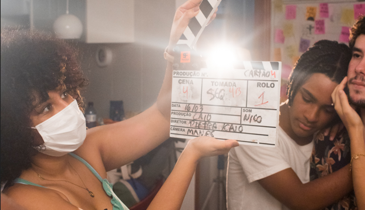

Sobre Mim
Conheça um pouco sobre mim!
Olá! Eu sou Geovanna Melo
Estudante de Cinema e Audiovisual e Análise e Desenvolvimento de Sistemas, venho fazendo
transição de carreira para a área de tecnologia. Tenho 23 anos e moro em Olinda, Pernambuco.
Cinema é a minha verdadeira paixão, por isso escolhi essa foto para ilustrar! Tenho inglês fluente e adoro aprender línguas.
Desenvolvimento Back-End têm sido a área que venho estudado mais em tecnologia e também a área que tenho mais afinidade.
Localização: Olinda, Pernambuco
Línguas: Português e Inglês
Nacionalidade: Brasileira
Email: gsfmelo@gmail.com
Skills
Essas são algumas das minhas habilidades!


Projetos
Conheça alguns dos meus projetos!
Projeto de Bicicletaria
Esse projeto é parte do trabalho final da disciplina de Lógica de Programação na faculdade de Análise e Desenvolvimento de Sistemas da UNINTER. Clique no botão ao lado.
Abrir link em uma nova janelaFormação
Essas são as minhas formações!
Curso de Desenvolvimento Back-End - Cubos Academy
Em andamento - Formação em DEZ/2023
Análise e Desenvolvimento de Sistemas - UNINTER
Em andamento - Formação em 2025
Cinema e Audiovisual - UFPE
Em andamento - Formação em 2024
Contato
Email: gsfmelo@gmail.com
Github: https://github.com/gsfmelo
LinkedIn: https://www.linkedin.com/in/geovanna-melo/